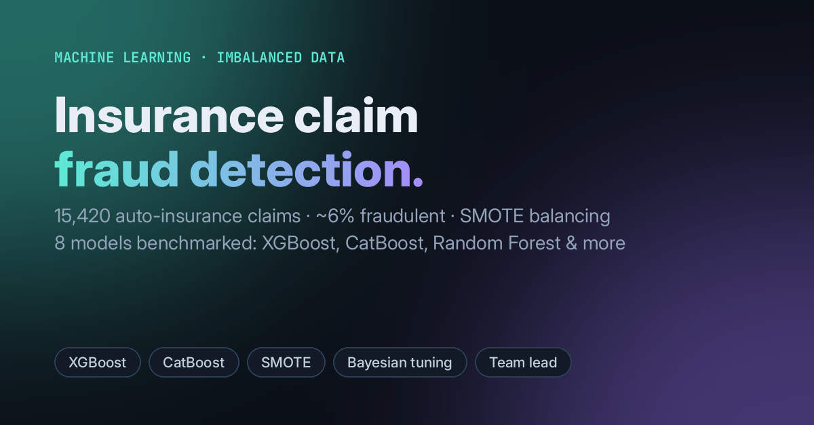

Machine learning · Imbalanced data
Vehicle Insurance Claim Fraud Detection
Only about 6% of claims in the data are fraudulent, so the work focuses on handling class imbalance and on catching fraud, since a missed fraudulent claim costs more than an extra review.

- Data: 15,420 claims with 33 policy, vehicle and accident variables.
- Models: Logistic Regression, KNN, Decision Tree, Random Forest, Gradient Boosting, XGBoost, CatBoost and Isolation Forest, tuned with grid, random and Bayesian search.
- Findings: tree ensembles were the strongest group. Unsupervised anomaly detection (Isolation Forest) did poorly here, which supports a supervised approach.
- Strongest signals: fault, policy type, vehicle category, base policy and vehicle price.
- Next step: SMOTE was applied before the train/test split, so scores are best read as a relative comparison. Re-running with SMOTE inside the training folds only is the planned fix.
- Role: team leader, AAI-510 Machine Learning (University of San Diego).
Pythonscikit-learnXGBoostCatBoostimbalanced-learnscikit-optimize
View code on GitHub →Watch the presentation